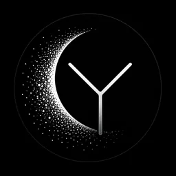

Model Arena
模型评测、对抗测试、幻觉分析、失效案例库、能力边界探索。

Yueon LabsAIGC is our support layer. The lab is about models that reason, agents that act, robots that touch the world, videos that become programmable, and student-built systems that make the future feel closer.
模型评测、对抗测试、幻觉分析、失效案例库、能力边界探索。
多模态、推理模型、世界模型、端侧模型、新交互范式。
长期记忆、工具调用、任务规划、自主执行、Agent Runtime。
具身智能、视觉感知、语音交互、动作规划、真实世界任务。
AI 视频、数字人、短片生成、动态视觉、创意工作流。
飞书、网页、本地工具、知识库、信息流和办公流自动化。
Local AI Assistant System
一个本地 AI 助手系统，支持长期记忆、深度搜索、受控命令执行、定时任务和飞书消息接入。 它是 Yueon Labs 的第一个系统级项目。
你可以不会代码，但你最好有好奇心。想测模型、做 Agent、玩机器人、做 AI 视频、做产品、做开源， 都可以加入这个实验场。
Follow on GitHub